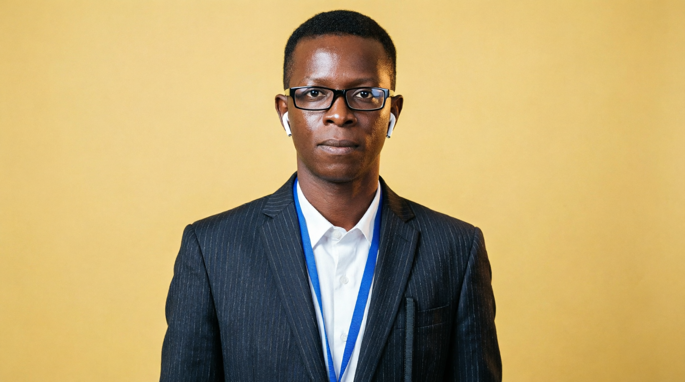

Alhassan Mansaray
Founder • Chief Unlock Specialist
A highly respected figure in Sierra Leone's mobile industry, Alhassan brings over 20 to 25 years of hands-on experience in phone unlocking, trading, and customer relations across the country. His deep understanding of local networks and carrier policies forms the backbone of our unlocking services.